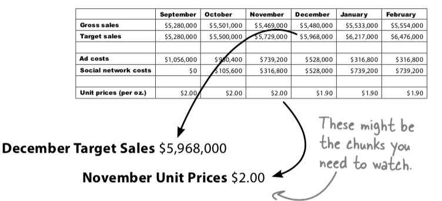
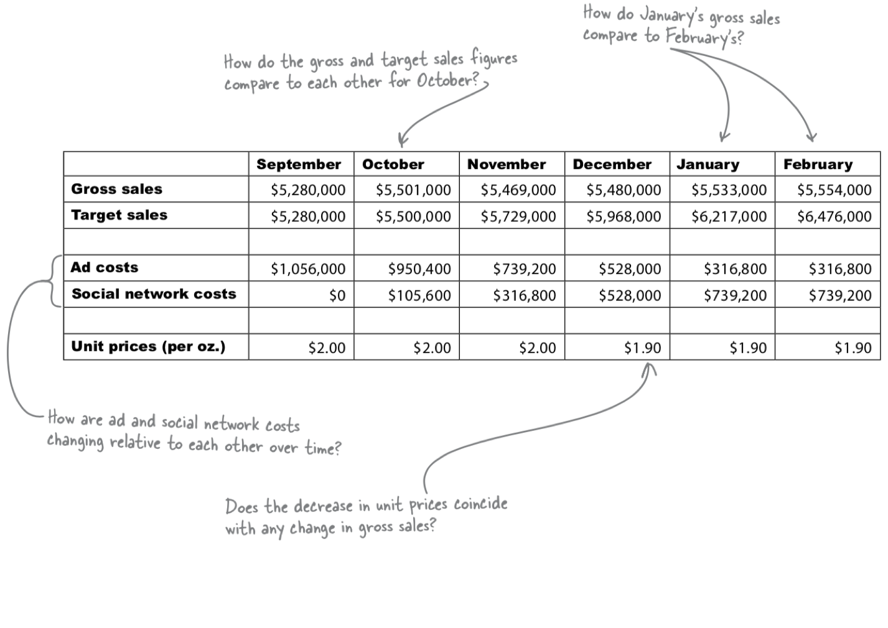

Disassemble
The next step after "Define" is "Disassemble"
Take what you've
learned about your problem from your client
your data
break information down into the level of granularity that will best serve your analysis
Divide problems in to
manageable
solvable
chunks.
If Data is a summary:
Which elements are most important

If Data is s raw:
Summarize elements first
The best way to start trying to isolate the most important elements of it is to find strong comparisions. (Please see example)
Divide problems:
You may have a vague problem like:
"How do we increase sales?"
We break it into
"What do our best customer want from us?"
"Waht promotions are most likely to work?"
"How is your advertising doing?"
We answer smaller problems to solve the bigger one
Comparison

不同月Sales对比
同月sales与target对比
同类变化程度对比 (ads and social)
单价成本降低和sales的对比